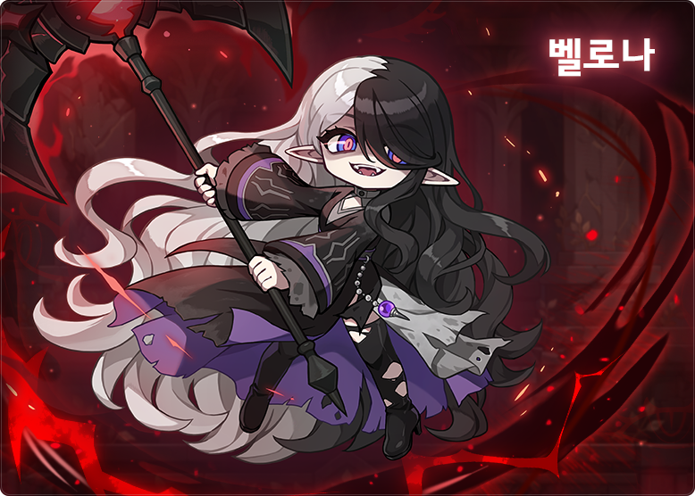
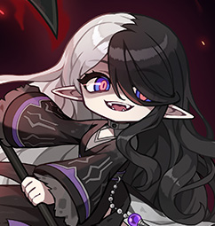

Checked-in boss knowledge
Bellona
Red attacks cost a life, and an Insane window survived un-hit gives one back.
- Boss level
- 280entry 280
- Defence (PDR)
- 380%
- Authentic Force
- 450
- Party
- Up to 3
- Recommended
- ≈ 89–97kKMS solo, Aug 2026
HP 4.122q total
- Phase 1
- 1.652q
- Phase 2
- 2.47q
- 8 Death Count, 20 minute limit (KMS).
Overview
Two states
- Normalregular patterns
- Insanered only · she takes +30%
About 30s each with no hits.
Gauge and lives (solo values)
- Red hit (Easy/Normal/Hard)
- ↓ −200/400/600
- Purple hit (Easy/Normal/Hard)
- ↓ −80/80/160
- Any red hit · lives
- ↓ −1 Death Count
- Clean Insane window · lives
- ↑ +1 Death Count
- Red attacks cost a life Red hits take 1 Death Count and cut the gauge hard; purple hits cut it a little.
- Shared gauge 0–1000, party-wide, moving about 31 per second: roughly 30s per state.
- Insane mode Red attacks only; each one hurts her, and she takes +30% damage.
- Clean Insane, +1 life Survive a whole window un-hit to regain a life (that player only). Any hit heals her.
- Sigils start Berserk Three sigils trigger a three-weapon attack chain.
- Binds skip a state Outside her rampage, a bind flips to the next state.
- Hidden markers Normal and Hard hide most ranges; Hard is faster.
Danger
- Double-axe Berserk Hands fill the map (Phase 1 under 50%, all of Phase 2). Bind it or use invincibility.
- Phase 2 below 50% Pinball adds a final slam (up-jump); the border sequence adds a bottom-centre charge.
- Hits snowball One hit invites panicked follow-ups; failed runs lose lives in a row.
Tips
- Vanish? Crouch first Upright somersault: crouch. Inverted: jump. In Insane, wait for the full red form.
- Horizontal, vertical, X Crouch, dash through on time (never early), stand still. Call Phase 2's triple tell aloud.
- Bottom-centre charge Up-jump. Axe raised: dash behind her. Axe to the side: stay crouched.
- Pinball Default to the left side.
- Read sigils in binds They show the next Berserk sequence.
Strategies
Dodge first
Low risk · High damage requirementFirst clears or below the minimum cut
- Stop attacking during every tell; add damage only once dodges are consistent.
- Treat each Insane window as a no-hit check; a clean one refunds a life.
- After a hit, reset and focus on the next tell instead of chasing damage.
Payoff Clean Insane windows come about once a minute and refund lives; slower clear
Share spare lives
Medium risk · Medium damage requirementDuo or trio where one member has spare Death Count
- The gauge is shared but the Insane refund is personal; the member with spare lives may take a pattern on purpose so others can finish Insane clean.
- Hits during Insane heal Bellona, so only do this when a teammate is short on lives.
Payoff Teammates may refund lives more often (unconfirmed interpretation of the source)
Notes
- MapleSEA Overdrive Announced for v255 in Easy, Normal and Hard. HP and mechanics use KMS data.
- Entry and credit Post-OVERDRIVE only. Level 280 and [Solatum] The Truth of Solatum; break the Ark after the kill.
- Spec unconfirmed From a Namu Wiki summary and a pre-release estimate.
Recommended · Normal KMS solo minimum about 89-97k (Aug 2026, unconfirmed).
Sources
Research checked .
- Orange Mushroom - KMS ver. 1.2.418 (Bellona)Orange Mushroom · guide
- MapleSEA Overdrive previewNexon SEA · official
- MapleStory Wiki - Bellona/MonsterMapleStory Wiki contributors · wiki
- Inven - Bellona pattern summaryInven community · guide
- Inven - Bellona gauge tipsInven community · guide